Syntagma
An Agentic Curriculum Lifecycle Management System for PES University
Syntagma is a FastAPI + static-frontend application that collects course submissions from faculty, refines them into curriculum-ready records with an LLM, renders the entire syllabus as HTML/PDF, lets an assistant agent propose and apply reviewable edits, and preserves named curriculum snapshots (versions).
It is built for a real, fast-changing syllabus: PESU revamps course content nearly every academic year, so nothing about the produced document is hardcoded. Course data, elective categorization, and specialization brackets all live in the database and are rendered dynamically.
Live Demo: syntagma.lonelyguy.tech (preferred) | Backup: pesucurriculum.vercel.app
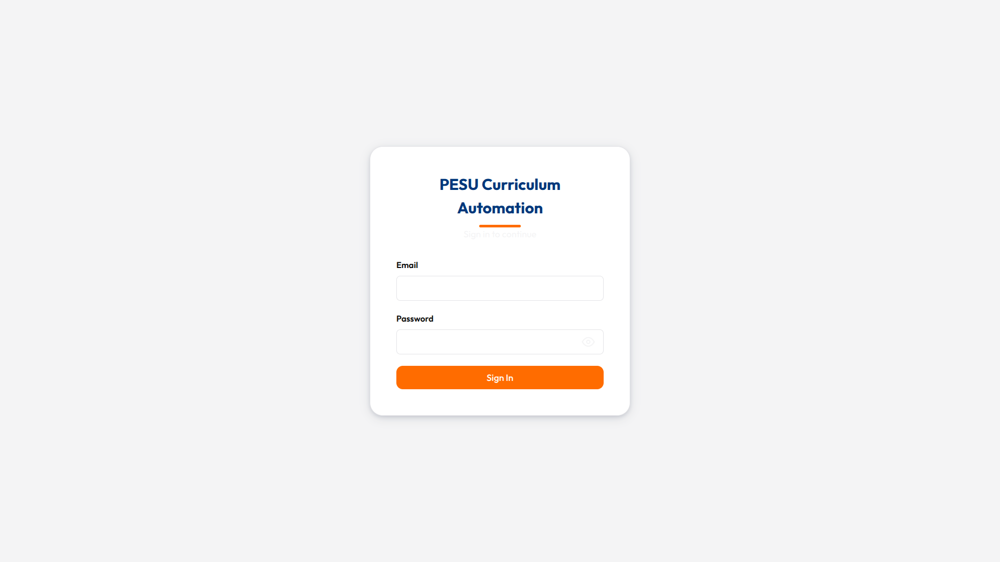
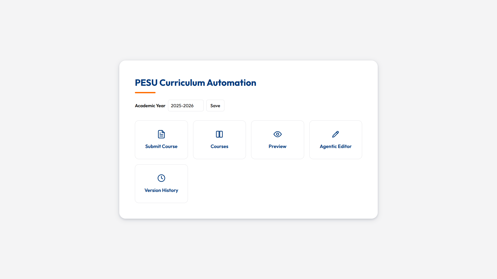
Features
- Course submission with auto-parsed course codes (semester, department, credits extracted automatically)
- AI refinement that preserves all syllabus topics, only cleans and structures content
- Full curriculum PDFs in PES University's official A4 format with letterhead
- Agentic Editor with AI assistant (SSE streaming, 35 tools, draft review, attachments)
- Reviewable drafts (agent never auto-applies changes)
- Agent retry with fallback model (Fibonacci backoff on 502/503, automatic model switch)
- Chat persistence (messages, tool calls, and results saved to database)
- Dynamic specialization management (DB-driven tracks, not hardcoded)
- Version snapshots with restore, revision history, and version-vs-version comparison
- Course visibility toggle and credit-based sorting
- Dual cache layer (Redis + in-memory, lazy invalidation)
- Authentication via Supabase Auth
Tech Stack
| Component | Technology | Purpose |
|---|---|---|
| Backend framework | FastAPI 0.138 + Uvicorn | ASGI server, routing, validation |
| Language | Python 3.12 | Runtime |
| Frontend | Vanilla HTML/CSS/JS | No build step, served as static files |
| Database | Supabase (PostgreSQL) | Persistent storage for all data |
| Cache | Upstash Redis (optional) | Serverless Redis; falls back to in-memory dict |
| LLM provider | OpenRouter | Streaming + tool calling, fallback model retry |
| PDF engine | WeasyPrint | A4 curriculum PDFs from Jinja2 HTML |
| Templating | Jinja2 | Curriculum layout, course pages, diffs |
| HTTP client | httpx | Async requests to OpenRouter and external URLs |
| Spreadsheet parsing | openpyxl | Reading uploaded .xlsx files for text extraction |
| Markdown rendering | marked.js (CDN) | Agent chat message rendering in browser |
| HTML sanitization | DOMPurify (CDN) | Sanitizing agent-generated HTML |
| PDF text extraction | poppler-utils (pdftotext) | Extracting text from uploaded PDF attachments |
| Auth | Supabase Auth (JWT) | Browser-based authentication |
| Error tracking | Sentry SDK (optional) | Production error monitoring |
| Deployment | Docker on HF Spaces | Backend at port 7860 |
| Frontend deploy | Vercel | Static hosting with /api rewrite to backend |
Quick Start
python3 -m venv .venv
source .venv/bin/activate
pip install -r requirements.txt
cd backend && fastapi dev app/main.pyServer at http://127.0.0.1:8000. API under /api. Frontend served from frontend/.
source .venv/bin/activate
pytest # 229 tests
python -m compileall backend/app # also runs in CIArchitecture
Layer Responsibilities
| Layer | Location | Responsibility |
|---|---|---|
| Static frontend | frontend/ | Course entry, course management, PDF preview, agentic editor, version history |
| API backend | backend/app/ | FastAPI routes, validation, refinement, previews, drafts, chat, snapshots |
| Services | backend/app/services/ | Business logic, LLM integration, caching, diffing, tool dispatch |
| Persistence | Supabase Postgres | Raw submissions, refined courses, agent drafts, chat history, attachments, curriculum versions |
| Cache | Redis + in-memory | Course lists, version lists, PDFs, with lazy invalidation |
| Rendering | Jinja2 + WeasyPrint | Curriculum summary pages, course detail pages, PDF exports |
| Model provider | OpenRouter | Submission refinement and live-editor chat with tool calls + fallback model retry |
| Auth | Supabase Auth (JWT) | Browser-based authentication with token verification |
| Monitoring | Sentry SDK | Optional production error tracking |
Backend Project Structure
| Path | Responsibility |
|---|---|
| main.py | FastAPI app, CORS, Supabase/.env loading, mounts /api routers and the static frontend |
| api.py | Aggregates all route routers under a single /api router |
| supabase.py | Supabase client + first_row() helper |
| cache.py | Dual cache (Redis + in-memory), lazy invalidation, prefix-based deletion |
| models/submission.py | CourseSubmission (request contract) and parse_course_code() |
| services/deterministic.py | compute_hours, compute_program, compute_course_type from credit category |
| services/refinement.py | The LLM refinement pipeline (refine) |
| services/curriculum.py | Sorting, ordering, version snapshots, draft records, field updates |
| services/diffing.py | JSON diff, protected-field validation, patch apply/merge |
| services/preview.py | build_course_preview, build_specialization_context |
| services/rendering.py | Jinja2 environment, filters, SEMESTER_NAMES global |
| services/agent_tools.py | Agent tool definitions + TOOLS registry (35 tools) + call_tool |
| services/openrouter.py | call() (one-shot), stream_chat() (tool-calling loop), fallback model retry |
| services/schema.py | REQUIRED_TABLES and schema_status() |
| services/errors.py | database_http_exception() |
| services/attachments.py | Text extraction from PDF/DOCX/XLSX/TXT |
| services/books.py | parse_books() textbook parser |
| services/elective_categorization.py | AI-powered elective-to-track matching |
| routes/health.py | GET /api/health/schema |
| routes/submissions.py | POST /api/submissions, POST /api/submissions/{id}/refine |
| routes/preview.py | Course/HTML/PDF preview endpoints (8 endpoints) |
| routes/refined.py | GET/PATCH a single refined course |
| routes/courses.py | List + toggle visibility + soft-delete refined courses |
| routes/agent.py | Draft + document-draft + tool endpoints (13 endpoints) |
| routes/chat.py | Chat sessions, SSE streaming, attachments, system prompt |
| routes/versions.py | Version CRUD, restore, previews, diffs (10 endpoints) |
| routes/auth.py | Token verification, logout |
| templates/jinja_sample.html | Single course + full document renderer + title page |
| templates/jinja_program.html | Program-level title page (large seal) + PEOs/POs |
| templates/jinja_1_to_8.html | Semester summary tables (1-4, 7-8) |
| templates/jinja_sem_5_6.html | Semester 5/6 electives + specialization tables |
| templates/jinja_diff.html | Structured diff renderer for drafts |
Frontend Project Structure
| Path | Purpose |
|---|---|
| index.html | Dashboard hub linking to all surfaces |
| form/ | Raw course submission form with course code parsing |
| courses/ | Refined course list with filtering, visibility toggle, soft delete |
| preview/ | Overall or per-semester PDF preview/download |
| live-editor/ | Agentic Editor: course preview, chat assistant, JSON editor, draft review, version restore |
| versions/ | Snapshot list, preview, comparison, editor handoff |
| auth/ | Sign in (Supabase Auth) |
| shared/ | auth-guard.js, supabase-client.js, shared.css, dialog.js |
How It Works
Syntagma has six surfaces. Each serves a purpose in the curriculum lifecycle.
Authentication
Supabase Auth with email/password. JWT verified on every API call. The shared/auth-guard.js script redirects unauthenticated users to /auth/.
Dashboard
Quick links to all surfaces: Submission Form, Courses, Preview, Live Editor, Versions, and Documentation.
Submission Form
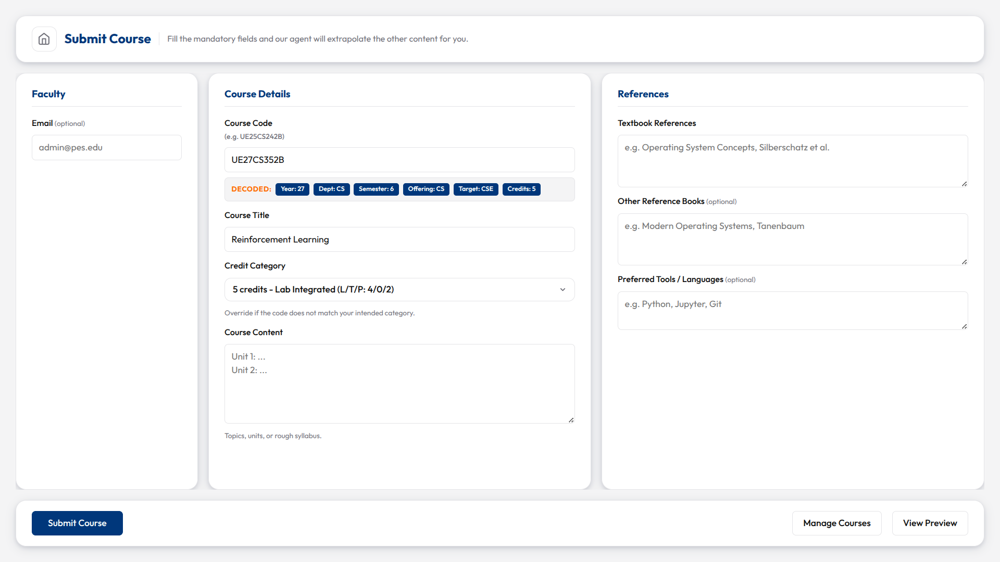
Faculty enter raw course data. Course codes are auto-parsed: semester, department, credits, and course type extracted from the code. Background refinement kicks in immediately after submission. Alternatively, course details can be sent as attachments in the agent chat, where the agent creates a refined course directly using create_refined_course.
Courses
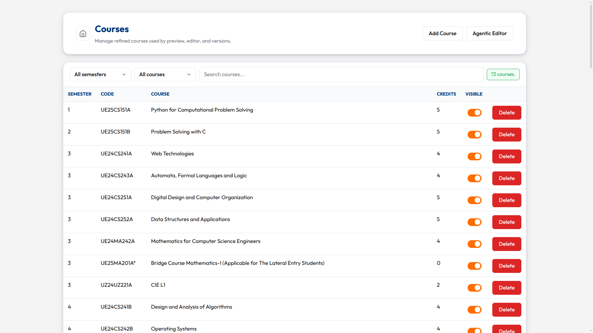
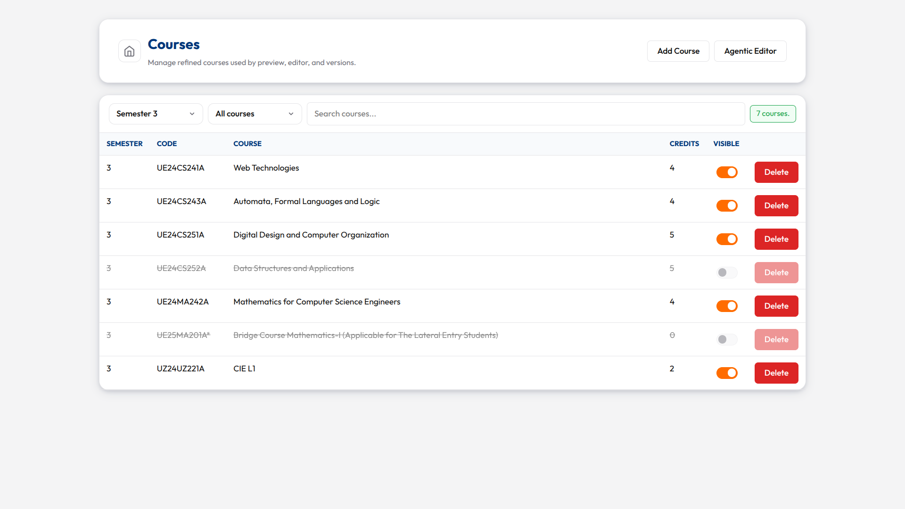
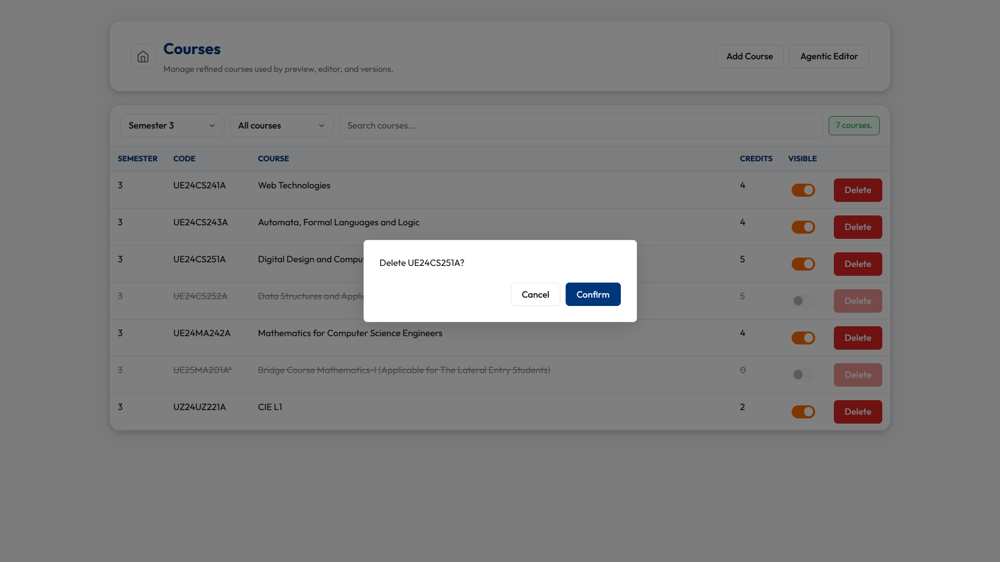
Lists all refined courses. Filter by semester or department. Toggle visibility (hidden courses are excluded from previews and PDFs). Delete with confirmation modal.
Preview
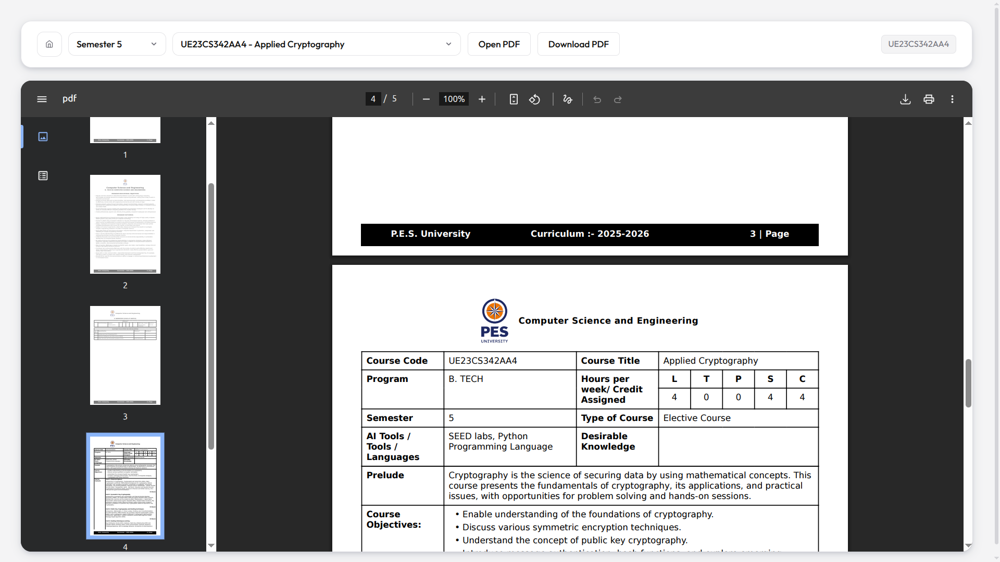
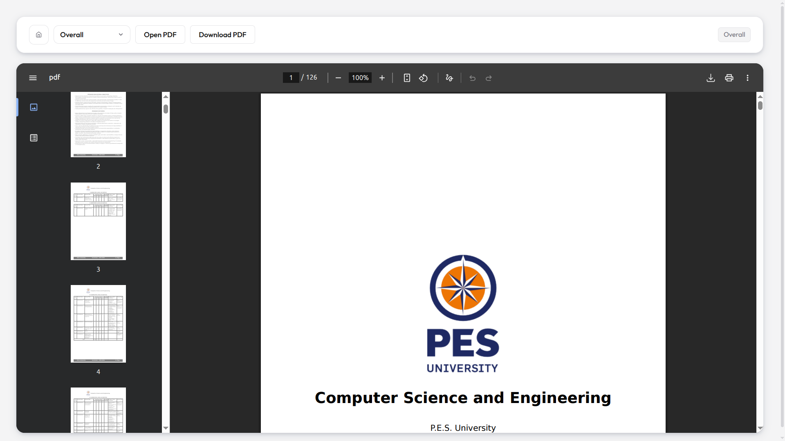
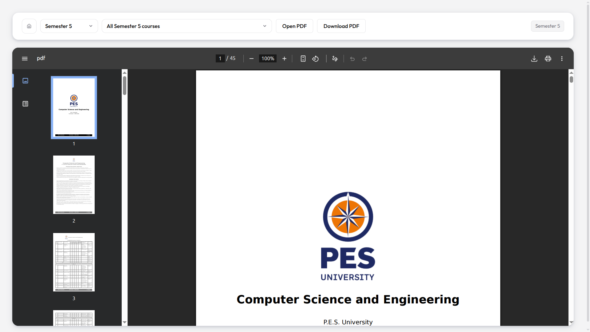
Three view modes: single course, full document, or per-semester. PDFs generated via WeasyPrint in PES University's A4 format with letterhead.
Agentic Editor
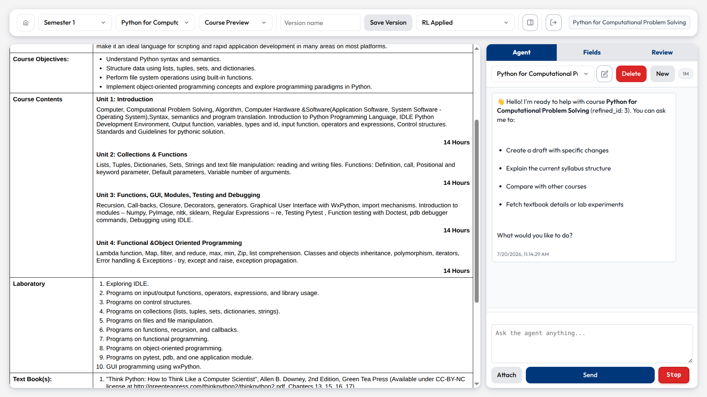
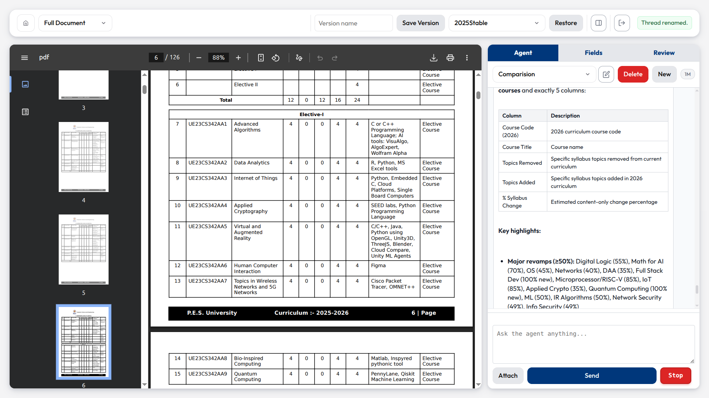
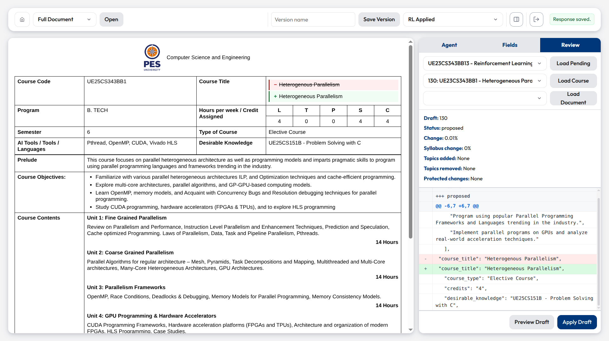
Two-column workspace. Left: preview iframe (single course or full document). Right: tabbed panel.
| Tab | What it does |
|---|---|
| Agent | AI assistant via SSE streaming. 35 tools. Creates reviewable drafts, never auto-applies. Thread management with rename/delete. File attachments supported. |
| Fields | Raw JSON editor. "Propose Changes" creates a reviewable draft. "Save" directly updates (non-protected fields only). |
| Review | Loads pending drafts (new courses, single-course, multi-course). Shows diff. Apply or reject. |
Versions
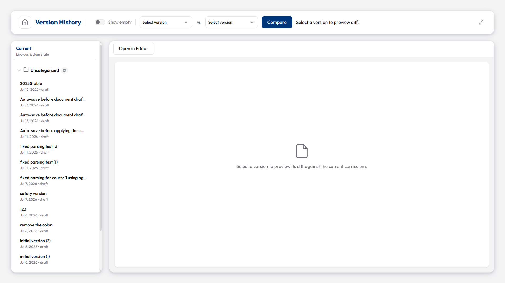
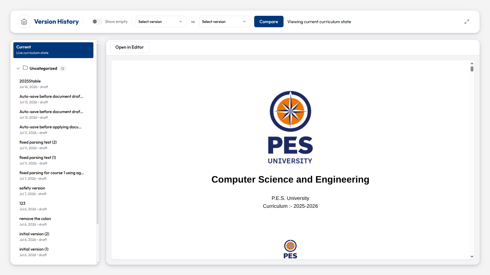
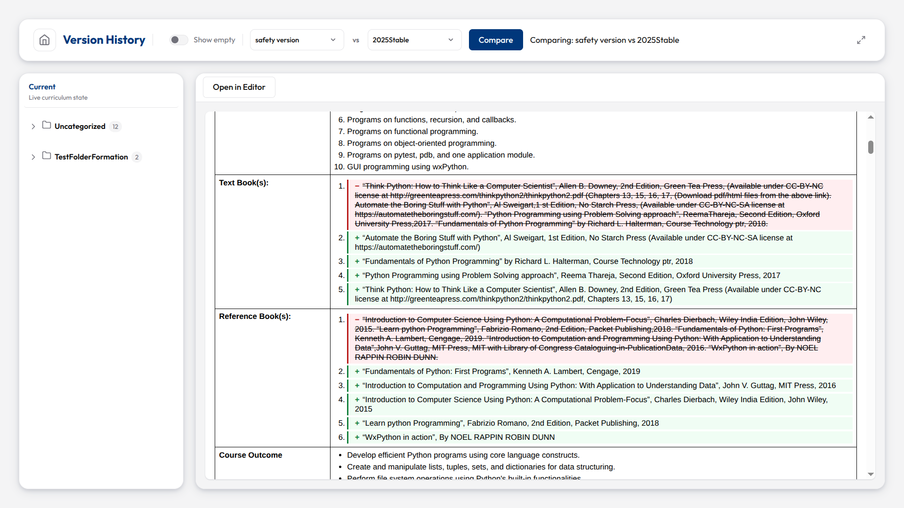
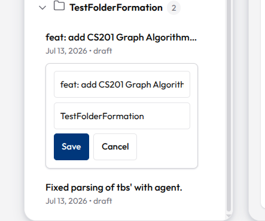
Named snapshots of the entire curriculum. "Current" at top of sidebar represents live state. Preview any snapshot, compare two versions, or restore a previous state. Restore archives absent courses and resets applied drafts.
Backend Internals
Submission Pipeline
| Step | What happens |
|---|---|
| 1 | POST /api/submissions validates payload against CourseSubmission |
| 2 | parse_course_code() derives offering_department, target_department, semester, credit_category |
| 3 | Inserts into submissions, queues background refinement |
| 4 | refine(submission_id) builds deterministic fields, calls OpenRouter, upserts refined_submissions |
| 5 | Course visible in /api/courses, previews, and editor |
Alternative path: course details sent as chat attachments can be used by the agent to create a refined course directly via create_refined_course, bypassing the submission/refinement pipeline.
Course Code Encoding
UE + YY (year) + DEPT (2-letter) + NUMBER (3-digit) + SUFFIX.
| Digit | Meaning |
|---|---|
| Tens | Credits (0/2/4/5) |
| Hundreds | Semester group |
| Suffix A/B | Odd/even semester parity |
parse_course_code() in models/submission.py is the single source of truth.
Deterministic Fields
Computed from credit_category by services/deterministic.py. Protected from casual edits.
| Category | L | T | P | S | C | Course type |
|---|---|---|---|---|---|---|
| 5 | 4 | 0 | 2 | 5 | 5 | Core Course-Lab Integrated |
| 4 | 4 | 0 | 0 | 4 | 4 | Core Course |
| 2 | 2 | 0 | 0 | 2 | 2 | Core Theory |
| 0 | 0 | 0 | 0 | 0 | 0 | Foundation Course |
Protected fields (diffing.py): program, lecture_hours, tutorial_hours, practical_hours, self_study, credits, course_type. Drafts that change them are blocked.
Preview & PDF Generation
build_course_preview(row) converts a refined_submissions row into a flat dict for templates. services/rendering.py builds the Jinja2 environment.
| Template | Renders |
|---|---|
jinja_program.html | Title page (PES seal, program name, year) and PEOs/POs |
jinja_sample.html | Individual course pages and summary tables |
jinja_1_to_8.html | Semester summary tables (1-4, 7-8) |
jinja_sem_5_6.html | Electives and specialization tables (5/6) |
jinja_diff.html | Structured diffs for agent drafts |
WeasyPrint converts rendered HTML to PDF. PDFs cached 60s. Course lists and version lists cached 180s.
Specialization System
Fully data-driven. No hardcoded specialization brackets.
| Table | Schema |
|---|---|
specialization_definitions | One row per track: id, semester, letter, name, key, academic_year |
course_specialization_assignments | One row per (course, track): id, refined_id, specialization_id |
refined_submissions.is_elective | Boolean flag |
build_specialization_context() loads tracks and assignments. Template excludes electives from regular tables, splits by code suffix (AA/BA -> group A), renders specialization assignment tables.
Agent tools: define_specialization, list_specializations, assign_elective_to_tracks, remove_elective_from_tracks, categorize_elective.
Agent System
Tool-calling LLM loop via openrouter.stream_chat. System prompt in chat.py:chat_system_prompt.
| Component | Purpose |
|---|---|
| Curriculum structure context | Semester ranges, course code encoding, credit categories |
| Draft vs. direct creation guidelines | When to draft vs. create directly |
| Desirable knowledge guidance | How to handle prerequisite knowledge fields |
| Agent acknowledgement instruction | Brief text before tool calls |
update_agent_draft tool mention | Modifying existing drafts |
Agent Tools (35 total)
| Tool | Category | Description |
|---|---|---|
get_current_course_json | Read | Full template-ready course JSON |
get_course_codes | Read | Lightweight IDs (refined_id, code, title, semester) |
get_course_syllabus | Read | Units, objectives, course_outcomes |
get_course_textbooks | Read | text_books, reference_books |
get_course_deterministic | Read | Protected fields (read-only context) |
get_course_lab | Read | Lab experiments, tools/languages |
get_course_fields | Read | Arbitrary field subset for one course |
batch_read_courses | Read | Read specific fields from multiple courses in one call |
get_curriculum_json | Read | Full curriculum, optionally by semester |
list_courses | Read | Course IDs/titles, optionally by semester |
get_curriculum_stats | Read | Aggregate statistics (total courses, credits per semester, course type distribution) |
diff_course_json | Read | Compare two course JSONs |
get_course_draft | Read | Read a staged course draft |
get_document_draft | Read | Read a staged document draft |
get_version | Read | Load a curriculum version snapshot with its course list |
diff_versions | Read | Compare two version snapshots (added/removed/changed courses) |
get_course_assignments | Read | Which specialization tracks a course belongs to |
list_specializations | Read | List track definitions |
get_attachment_text | Read | Read uploaded chat attachments |
fetch_url | Read | Fetch external URL content |
web_search | Read | Search the web for external context |
create_course_draft | Write | Propose changes for a single course (reviewable draft) |
update_agent_draft | Write | Merge fields into an existing draft (avoids duplicates) |
create_document_draft | Write | Propose changes for multiple courses (reviewable draft) |
assign_elective_to_tracks | Write | Categorize an elective into specialization tracks |
remove_elective_from_tracks | Write | Remove a course from specialization tracks |
define_specialization | Write | Create a new specialization track |
categorize_elective | Write | AI-powered elective categorization into existing tracks |
update_deterministic_fields | Write | Change protected fields; produces a blocked draft requiring explicit user approval |
create_refined_course | Write | Create new courses directly (for brand-new courses only) |
create_spreadsheet | Generate | Generate CSV or Excel (.xlsx) files from structured row data |
create_report | Generate | Generate markdown or PDF reports |
create_curriculum_version | Generate | Snapshot the current curriculum state |
signal_done | Control | Signal task completion with a summary |
SSE Event Types
Streamed from POST /chat/sessions/{id}/messages:
| Event | Description |
|---|---|
status | Status updates (model name, tool execution) |
token | Streamed text tokens from the LLM |
tool_call | Agent invoking a tool (name + arguments) |
tool_result | Tool execution result |
draft | A course draft was created |
document_draft | A document draft was created |
refined_course | A new course was created directly |
context_usage | Token usage statistics |
error | Error occurred |
done | Stream complete |
Chat Persistence
All messages (user, assistant, tool_call, tool_result) saved to chat_messages with role and metadata. Tool calls include function name and arguments; tool results include output. Conversation history persists across page refreshes.
Agent Output Validation
| Validation | Behavior |
|---|---|
desirable_knowledge | Placeholder values (e.g., "None specified") stripped by _create_refined_course |
| Draft-status courses | _create_course_draft rejects drafts, directs agent to create_refined_course |
Versioning
create_version_snapshot copies every active refined_submissions into finalized_submissions pinned to a curriculum_versions row. restore overwrites current refined data, archives absent courses, writes revision history.
Caching
Dual cache layer (services/cache.py):
| Backend | Config | Behavior |
|---|---|---|
| Redis (Upstash, optional) | REDIS_URL | Survives server restarts |
| In-memory dict | Fallback | Survives within a process |
| Prefix | TTL | Purpose |
|---|---|---|
courses_list | 180s | Course list for /api/courses |
course_pdf: | 60s | Individual course PDF bytes |
version_list | 180s | Version list for /api/versions |
Invalidation: lazy (delete-on-write). Prewarm on startup. Debug: set is_cache_disabled = True in cache.py.
Error Handling & Retry
OpenRouter client (services/openrouter.py):
| Parameter | Value |
|---|---|
| Retryable statuses | 502, 503 (server errors) |
| Retryable exceptions | httpx.TimeoutException, httpx.TransportError |
| NOT retried | 429 (rate limit) - shows error and stops immediately |
| Backoff | Fibonacci sequence [1, 1, 2, 3, 5, 8, 13] seconds with +/-25% jitter |
| Max retries | 3 per request |
| Retry-After header | Respected when present |
Fallback model:
| Parameter | Behavior |
|---|---|
OPENROUTER_FALLBACK_MODEL | Set env var to enable (e.g. google/gemma-3-27b-it:free) |
| Trigger | After 3 failed retries on the primary model |
| Scope | Commits to fallback for the rest of the chat thread |
| Notification | Announced via SSE status events so the UI can inform the user |
| Persistence | Once committed, active_model persists as the fallback for all subsequent calls |
429 (rate limit): No retry, no fallback. Error shown in chat and status bar. User must wait and retry manually.
Chat streaming errors: Surfaced as SSE error events. UI creates error bubble even when no tokens received. Done handler reloads messages from database.
API Reference
All paths are prefixed with /api at runtime.
Health
| Endpoint | Method | Purpose |
|---|---|---|
/api/health/schema | GET | Verify required Supabase tables exist. Returns 503 if tables are missing. |
Submissions
| Endpoint | Method | Purpose |
|---|---|---|
/api/submissions | POST | Store a raw submission, queue background refinement. Body: CourseSubmission. |
/api/submissions/{id}/refine | POST | Manually trigger refinement for an existing submission. |
Refined Courses
| Endpoint | Method | Purpose |
|---|---|---|
/api/refined/{refined_id} | GET | Read template-ready course fields. |
/api/refined/{refined_id} | PATCH | Update editable refined fields. Promotes draft-status courses to refined. Body: { fields: dict }. |
Course Management
| Endpoint | Method | Purpose |
|---|---|---|
/api/courses | GET | List active refined courses (cached 180s). |
/api/courses/{refined_id}/visible | PATCH | Toggle course visibility. Body: { visible: bool }. |
/api/courses/{refined_id} | DELETE | Soft-delete (archive) a course. |
Preview & PDF
| Endpoint | Method | Purpose |
|---|---|---|
/api/preview/course/{refined_id} | GET | Render one course as HTML. |
/api/preview/course/{refined_id}/pdf | GET | Generate PDF for one course. ?download=true for attachment. |
/api/preview/html | GET | Render full curriculum as HTML. |
/api/preview/pdf | GET | Generate full curriculum PDF. ?download=true for attachment. |
/api/preview/semester/{sem}/pdf | GET | Generate one semester as PDF. |
/api/preview/semester/{sem}/courses | GET | List course IDs for a semester. |
/api/preview/pending-courses | GET | List draft-status (pending) courses. |
/api/preview/courses | GET | List all visible refined course IDs. |
Agent Drafts
| Endpoint | Method | Purpose |
|---|---|---|
/api/agent/drafts | GET | List 100 most recent agent drafts. |
/api/agent/drafts | POST | Create a single-course draft. Body: { refined_id, fields, reason? }. |
/api/agent/drafts/{draft_id} | GET | Fetch a draft with base/proposed JSON and diff summary. |
/api/agent/drafts/{draft_id}/apply | POST | Apply a proposed draft. Rejects blocked drafts or protected-field changes. |
/api/agent/drafts/{draft_id}/preview | GET | Render draft as HTML. ?diff=true for diff view. |
Document Drafts (multi-course)
| Endpoint | Method | Purpose |
|---|---|---|
/api/agent/document-drafts | GET | List 100 most recent document drafts. |
/api/agent/document-drafts | POST | Create a multi-course draft. Body: { courses: [{ refined_id, fields }], reason? }. |
/api/agent/document-drafts/{id} | GET | Fetch document draft with all linked course drafts. |
/api/agent/document-drafts/{id}/apply | POST | Apply all proposed sub-drafts. |
/api/agent/document-drafts/{id}/preview | GET | Render all proposed courses. ?diff=true for diff view. |
Agent Tools & Diff
| Endpoint | Method | Purpose |
|---|---|---|
/api/agent/tools | GET | List all agent tool schemas (OpenAI function-calling format). |
/api/agent/tools/{tool_name} | POST | Execute a tool directly. Body: { arguments: dict }. |
/api/agent/context-length | GET | Return current model's context window size. |
/api/agent/diff | POST | Compute structured diff between two course JSONs. |
Chat
| Endpoint | Method | Purpose |
|---|---|---|
/api/chat/sessions | GET | List active sessions. ?refined_id= or ?document_draft_id= to filter. |
/api/chat/sessions | POST | Create a session. Body: { refined_id?, document_draft_id?, title? }. |
/api/chat/sessions/{id} | PATCH | Rename a session. Body: { title }. |
/api/chat/sessions/{id} | DELETE | Soft-archive a session and its messages. |
/api/chat/sessions/{id}/messages | GET | Fetch all messages in a session. |
/api/chat/sessions/{id}/messages | POST | Send a message and stream response via SSE. Events: status, token, tool_call, tool_result, draft, document_draft, refined_course, context_usage, error, done. |
/api/chat/sessions/{id}/attachments | POST | Upload files (multipart/form-data). 10MB/file, 25MB total. |
/api/chat/sessions/{id}/attachments/{att_id}/download | GET | Download an attachment. |
/api/chat/sessions/{id}/attachments/{att_id}/preview | GET | Preview an attachment inline. |
Versions
| Endpoint | Method | Purpose |
|---|---|---|
/api/versions | GET | List all curriculum snapshots. Includes course_count and has_changes. |
/api/versions | POST | Create a snapshot. Returns 409 if no changes since last version. Body: { name, program?, academic_year?, status? }. |
/api/versions/{version_id} | GET | Fetch version with its course list. |
/api/versions/{version_id} | PATCH | Update version metadata. Body: { name?, academic_year?, status? }. |
/api/versions/{version_id} | DELETE | Delete a version and its finalized_submissions. |
/api/versions/{version_id}/restore | POST | Restore a snapshot. Archives absent courses. Resets applied drafts. |
/api/versions/{version_id}/courses/{refined_id} | GET | Fetch a single course snapshot from a version. |
/api/versions/{version_id}/courses/{refined_id}/preview | GET | Render a version course as HTML. |
/api/versions/{version_id}/preview | GET | Render all version courses. ?diff=true for diff vs current. |
/api/versions/{id1}/diff/{id2} | GET | Render side-by-side diff between two versions. |
Auth
| Endpoint | Method | Purpose |
|---|---|---|
/api/auth/check | GET | Verify the bearer token is valid. Returns user info or 401. |
/api/auth/logout | POST | Sign out the current user. |
Query Parameters
| Parameter | Applies to | Description |
|---|---|---|
curriculum_year | All preview/PDF endpoints | Pin the batch year (e.g. 2025-2026). Falls back to CURRICULUM_YEAR env var. |
download | PDF endpoints | Set true to trigger Content-Disposition attachment. |
diff | Draft/version preview | Set true to render diff view instead of proposed content. |
Total: 49 endpoints across 9 route files.
Database Schema
Run docs/schema.sql in the Supabase SQL editor. Required tables:
submissions, refined_submissions, curriculum_versions, finalized_submissions, agent_drafts, agent_document_drafts, course_revision_history, chat_sessions, chat_messages, chat_attachments, specialization_definitions, course_specialization_assignments.
Course Status Lifecycle
submissions.status: pending -> refined
refined_submissions: draft -> refined -> archived
agent_drafts: proposed -> applied
blocked -> proposed (on user edit)
chat_sessions: active -> archivedKey Columns on refined_submissions
course_code, course_title, semester, credit_category, program, lecture_hours, tutorial_hours, practical_hours, self_study, credits, course_type, is_elective, visible, units (jsonb), objectives/text_books/... (arrays), status.
visible (default true) controls whether a course renders in preview/PDF output. Toggle it from the course management page. Hidden courses stay in the database and remain editable but are excluded from every rendered document.
Verify with GET /api/health/schema.
Table Relationships
refined_submissions (1) ----< (N) agent_drafts
refined_submissions (1) ----< (N) course_revision_history
curriculum_versions (1) ----< (N) finalized_submissions
agent_document_drafts (1) ----< (N) agent_drafts
chat_sessions (1) ----< (N) chat_messages
chat_sessions (1) ----< (N) chat_attachments
specialization_definitions (1) ----< (N) course_specialization_assignments
refined_submissions (1) ----< (N) course_specialization_assignmentsSpecialization Tables
| Table | Schema |
|---|---|
specialization_definitions | One row per track: id, semester, letter (A/B/C...), name, key (SCC/MIDS/CSCS), academic_year |
course_specialization_assignments | One row per (course, track) membership: id, refined_id, specialization_id |
refined_submissions.is_elective | Boolean flag marking a course as an elective |
Environment Variables
Required backend (/api server, loaded from repo-root .env)
| Variable |
|---|
SUPABASE_URL |
SUPABASE_KEY |
OPENROUTER_URL |
OPENROUTER_API_KEY |
OPENROUTER_MODEL |
Optional
| Variable | Description |
|---|---|
CURRICULUM_YEAR | The active batch label (e.g. 2025-2026) |
OPENROUTER_FALLBACK_MODEL | Backup model used when the primary model fails after retries (e.g. google/gemma-3-27b-it:free) |
REDIS_URL | Upstash Redis URL for persistent caching (falls back to in-memory) |
SENTRY_DSN, SENTRY_ENVIRONMENT, SENTRY_RELEASE | Error tracking configuration |
The frontend uses the public Supabase anon key directly in shared/supabase-client.js.
Deployment
Backend (HF Spaces)
Docker image runs uvicorn app.main:app --host 0.0.0.0 --port 7860 (HF Space).
.github/workflows/sync-to-hub.yml syncs main to the HF Space.
Required HF Space secrets:
| Secret | Description |
|---|---|
SUPABASE_URL, SUPABASE_KEY | Database connection |
OPENROUTER_URL, OPENROUTER_API_KEY, OPENROUTER_MODEL | LLM provider |
OPENROUTER_FALLBACK_MODEL | Recommended fallback model |
REDIS_URL | Optional persistent caching |
SENTRY_DSN, SENTRY_ENVIRONMENT, SENTRY_RELEASE | Optional error tracking |
Frontend (Vercel)
Static hosting with frontend/vercel.json rewriting /api/* to the backend.
Required Vercel environment variables:
| Variable | Description |
|---|---|
NEXT_PUBLIC_SUPABASE_URL | Public Supabase URL |
NEXT_PUBLIC_SUPABASE_ANON_KEY | Public Supabase anon key |
CI (.github/workflows/ci.yml)
Runs on push/PR: checkout, Python 3.12, pip install (cached), apt-get install poppler-utils, pytest, python -m compileall backend/app.
Local Development
python3 -m venv .venv
source .venv/bin/activate
pip install -r requirements.txt
cd backend && fastapi dev app/main.pyServer at http://127.0.0.1:8000. API under /api. Frontend served from frontend/.
source .venv/bin/activate
pytest # all tests
python -m compileall backend/app # also runs in CI